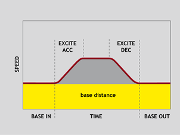

Axis Command
FLEXLINK(base_dist, excite_dist, link_dist, base_in, base_out, excite_acc, excite_dec, link_axis, options, start_pos)
The FLEXLINK command is used to generate movement of an axis according to a defined profile. The motion is linked to the measured motion of another axis. The profile is made up of 2 parts, the base move and the excitation move both of which are specified in the parameters. The base move is a constant speed movement. The excitation movement uses sinusoidal or alternative profile and is applied on top of the base movement.

This command allows you to simplify a CAMBOX type movement through not having to use any table data.
|
base_dist: |
The distance the axis should move at a constant speed |
|
|
excite_dist: |
The distance the axis should perform the profiled move |
|
|
link_dist: |
The distance the link axis should move while the FLEXLINK profile executes |
|
|
base_in: |
The percentage of the base move time that completes before the excitation move starts |
|
|
base_out: |
The percentage of the base move time that completes after the excitation move completes. |
|
|
excite_acc: |
The percentage of the excitation move time used for acceleration |
|
|
excite_dec: |
The percentage of the excitation move time used for deceleration. |
|
|
link_axis: |
The axis to link to. |
|
|
link_options: |
Bit value options to customise how FLEXLINK operates |
|
|
Bit 0 |
link commences exactly when registration event MARK occurs on link axis |
|
|
Bit 1 |
link commences at an absolute position on link axis (see link_pos for start position) |
|
|
Bit 2 |
FLEXLINK repeats automatically and bi-directionally when this bit is set. (This mode can be cleared by setting bit 1 of the REP_OPTION axis parameter) |
|
|
Bit 3 |
Reserved (see CAMBOX) |
|
|
Bit 4 |
Reserved (see MOVELINK) |
|
|
Bit 5 |
Link is only active during a positive move on the link axis |
|
|
Bit 6 |
Reserved |
|
|
Bit 7 |
Reserved (see CAMBOX) |
|
|
Bit 8 |
link commences exactly when registration event MARKB occurs on link axis |
|
|
Bit 9 |
link commences exactly when registration event R_MARK occurs on link axis. (See link_pos for channel number) |
|
|
Bits 10…12 |
Contains a 3-bit integer value that represents the type of curve for the acceleration/deceleration phase. Note that, unlike MOVELINK, bit 4 does not have to be set to use this setting).
0 – Sine curve
|
|
|
Bit 13 |
Slave axis follows master axis DPOS (otherwise MPOS) |
|
|
Bit 14 |
Link is active during positive movement from a threshold. The threshold is updated to the highest positive value. |
|
|
link_pos: |
link_option bit 1 - the absolute position on the link axis in user UNITS where the FLEXLINK is to start. link_option bit 9 – the registration channel to start the movement on |
|
The link_dist is in the user units of the link axis and should always be specified as a positive distance.
The link options for start (bits 1, 2, 8 and 9) may be combined with the link options for repeat (bits 4 and 8) and direction.
start_pos cannot be at or within one servo period’s worth of movement of the REP_DIST position.
Suppose you want a smooth curve for 40% of a cycle and to remain stationary for the remainder:
FLEXLINK(0, 10000, 20000, 60, 0, 50, 50, 1)
In this example the move length is 10000 and this is linked to 20000 distance on the link axis (1). The axis is stationary for 60% of the cycle and the move is 50% accel/50% decel.
Suppose you want a 1:1 background link but to advance 500 using a smooth curve between 80% and 95% of a cycle:
FLEXLINK(10000, 500, 10000, 80, 5, 50, 50, 1)
In this example the base move length is 10000 and this is linked to 10000 distance on the link axis (1). The excite distance is 500 and this starts after 80% of the cycle, with 5% at the end also clear of excitation. The “excite” move is 50% accel/50% decel.